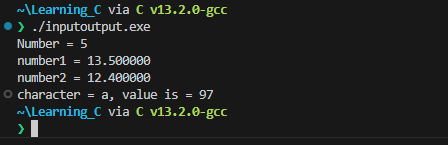

Lab 1: Learning C
We will be doing this lab inconjuction with the C lecture. Key concepts will be explained and you will put into practice.
0. Compiler for C
-
We need add a compiler to out
PATHto do that revist the~/.bashrcfile and append thePATHenvironment variable the following:- This collection of build tools are from https://github.com/skeeto/w64devkit/releases
- and only for our machines in Nelson 128 and Nelson 108, you can download and install using the release and then do the export above.
-
Then source the
~/.bashrcor use the alias we created last timerefreshor
-
The following packages are now available:

So let's make our first program.
1. Create a Project in Visual Studio:
-
Open Visual Studio Code and create a new folder called
Learning_C.. -
Create a new file named
helloworld.cinside theLearning_Cdirectory.
-
Then open the file and edit:
#include <stdio.h> // we need this library to get access to the input and out put methods for printing to terminal int main() { printf("Hello World\n"); // lets say hello, where it all began... printf("Goodbye World\n"); // this seems fitting as the program will close after this. return 0; // returns 0 to the int of main() and terminate the program }Some explanation about the above code:
-
All code gets executed inside of
main(), -
For the program to terminate the
main()has to have a returnable value,int, -
The keyword at the end of the
main()isreturn, this is will return the value preceeding it, -
A
0execute means no errors. > -
Similar to
C#to use librariescprograms import with the#includekeyword instead ofusing. -
The included library is the standard input out header,
stdio.h. -
By including this header file we have access to the
printf()function that enables us to return information to the terminal in string format.
Now we are going to compile the code so that we have an executable file that can be run from the terminal, using the
gcccompiler:-
You can open the terminal in visual studio code using ctrl+shift+'
-
If you do not have bash as the default, you can select it from the drop down arrow, like below.
Click for Expected Output
Congratulations, you used the programming language of the gods!
-
2. Data Type: Printing Integer
-
Now we are going to create a new program called
inputoutput.cto look like below: -
Now we are going to compile the code so that we have an executable file that can be run from the terminal, using the
gcccompiler:
-
We use
%dformat specifier to printinttypes. Here, the%dinside the quotations will be replaced by the value oftestInteger. -
Changing
%dto other specifiers will cause the compiler to interpret the variable differently.
-
3. Data Types: Printing Float and Double
-
Modify the same file again to look like below:
#include <stdio.h> int main() { ... float number1 = 13.5; double number2 = 12.4; printf("number1 = %f\n", number1); printf("number2 = %lf", number2); return 0; } -
Run the code again and you will see this again...
-
We need to recompile,
gcc, and rerun:
- To print float, we use
%fformat specifier. Similarly, we use%lfto print double values.
- To print float, we use
4. Data Types: Printing Characters
-
Modify the same file again to look like below:
-
Run the program again and you should see the following ouput:

- To print
char, we use%cformat specifier. - Every
charhas a numerial representation in ASCII, using%dwe can get the numerical value.
- To print
5. User Input in C
In C programming, scanf() is one of the commonly used function to take input from the user. The scanf() function reads formatted input from the standard input such as keyboards.
-
Again we will modify the program to look like the code below:
-
Run the program to get the following output, respond to the prompt and type in a number:
-
Here, we have used
%dformat specifier inside thescanf()function to takeintinput from the user. When the user enters an integer, it is stored in thetestIntegervariable.
-
6. Format Specifiers
Here is a table of possible format specifiers for input and output:
| Data Type | Format Specifier |
|---|---|
int | %d |
char | %c |
float | %f |
double | %lf |
short int | %hd |
unsigned int | %u |
long int | %li |
long long int | %lli |
unsigned long int | %lu |
unsigned long long int | %llu |
signed char | %c |
unsigned char | %c |
long double | %Lf |
7. Data Types
-
Create a new file with called
dataTypeSize.c -
We are going to write a program that returns the size of each data type availabe in
c, modify the program to look like below:#include<stdio.h> int main(){ printf("Data_Types\t\tStorage_Size \n"); printf("char\t\t\t%d byte(s) \n", sizeof(char)); printf("int\t\t\t%d byte(s) \n", sizeof(int)); printf("double\t\t\t%d byte(s) \n", sizeof(double)); printf("float\t\t\t%d byte(s) \n", sizeof(float)); printf("unsigned char\t\t%ld byte(s) \n", sizeof(unsigned char)); printf("long\t\t\t%d byte(s) \n", sizeof(long)); printf("unsigned long\t\t%ld byte(s) \n", sizeof(unsigned long)); printf("long double\t\t%ld byte(s) \n", sizeof(long double)); return 0; } -
Run program to see the data types and there available sizes in bytes:

8. Conditions in C (If-Statement)
Basic if statement
In C, the if statement is a fundamental control structure that allows you to make decisions based on certain conditions. It enables you to execute different blocks of code based on whether a condition is true or false.
Create a C Program
-
Create a new C file using a text editor like
nano: -
Write a program that applies the
ifstatement in C to checkifthe variablenumis greater than 5 using anifstatement. If the condition istrue, the code inside theifblock is executed, and it prints a message. -
Save the file and exit the text editor.
-
Compile your C code using the
gcccompiler to generate an executable file: -
Run your C program using the generated executable file:
This program will output "The number is greater than 5" because the condition num > 5 is true.
If-else statement
You can use an if-else statement to execute different code blocks for true and false conditions. Update your code as follows:
#include <stdio.h>
int main() {
int num = 3;
if (num > 5) {
printf("The number is greater than 5.\n");
} else {
printf("The number is not greater than 5.\n");
}
return 0;
}
If-else if statement
You can use the if-else if statement to handle multiple conditions. Update your code as follows:
#include <stdio.h>
int main() {
int num = 0;
if (num > 0) {
printf("The number is positive.\n");
} else if (num < 0) {
printf("The number is negative.\n");
} else {
printf("The number is zero.\n");
}
return 0;
}
Exersices
Exercise-1: Even or Odd
Create a program that checks whether a given integer is even or odd. Prompt the user to enter an integer, and then display a message indicating whether it's even or odd.
#include <stdio.h>
int main() {
int num;
printf("Enter an integer: ");
scanf("%d", &num);
if (num % 2 == 0) {
printf("%d is even.\n", num);
} else {
printf("%d is odd.\n", num);
}
return 0;
}
Exercise-2 Prime Number Checker
Write a program that determines if a given number is prime or not.
- A prime number is a natural number greater than 1 that cannot be formed by multiplying two smaller natural numbers. In other words, a prime number has only two positive divisors: 1 and itself. For example, the first few prime numbers are 2, 3, 5, 7, 11, 13, 17, and so on. These numbers are only divisible evenly by 1 and the number itself.
#include <stdio.h>
int is_prime(int number) {
if (number < 2) {
return 0; // False
}
for (int i = 2; i * i <= number; i++) {
if (number % i == 0) {
return 0; // False
}
}
return 1; // True
}
int main() {
int num;
printf("Enter a number: ");
scanf("%d", &num);
if (is_prime(num)) {// calling the function above.
printf("%d is a prime number.\n", num);
} else {
printf("%d is not a prime number.\n", num);
}
return 0;
}
Exercise-3 : Simple Calculator
Write a basic calculator program that allows the user to perform addition, subtraction, multiplication, and division on two numbers. Ask the user to enter the operation they want to perform and the numbers to operate on.
#include <stdio.h>
int main() {
char operation;
double num1, num2, result;
printf("Enter operation (+, -, *, /): ");
scanf(" %c", &operation);
printf("Enter first number: ");
scanf("%lf", &num1);
printf("Enter second number: ");
scanf("%lf", &num2);
if (operation == '+') {
result = num1 + num2;
} else if (operation == '-') {
result = num1 - num2;
} else if (operation == '*') {
result = num1 * num2;
} else if (operation == '/') {
if (num2 != 0) {
result = num1 / num2;
} else {
printf("Cannot divide by zero. Please enter a non-zero second number.\n");
return 1; // Return an error code
}
} else {
printf("Invalid operation. Please choose +, -, *, or /.\n");
return 1; // Return an error code
}
printf("Result: %lf\n", result);
return 0;